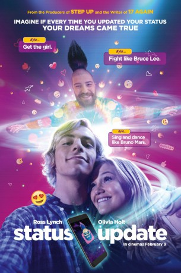
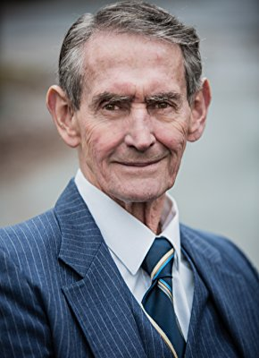

#9931 Appgefahren - Alles ist möglich
 
 IMDB-Wertung: 5.8 / 10
IMDB-Wertung: 5.8 / 10  Metascore: 0
Metascore: 0 
Ross Lynch stars as Kyle Moore, a teenager who after being uprooted by his parents' separation and unable to fit into his new hometown, stumbles upon a magical app that causes his social media updates to come true.
Jahr: 2018
Dauer: 106 Minuten
FSK: 6
Land: China Studio: Concorde Home EntertainmentTonspuren: DTS - ,
Untertitel: Deutsch, Englisch,
Auflösung: 1080p (1920x808) Größe: 6410 MB
Genre: Komödie, Fantasy
Regisseur: Scott Speer
Drehbuch: Jason Filardi
Soundtrack: Jeff Cardoni
Darsteller:
- Ross Lynch als Kyle Moore
- Olivia Holt als Dani McKenzie
- Harvey Guillen als Lonnie Gregory
- Courtney Eaton als Charlotte Alden
- Gregg Sulkin als Derek Lowe
- Brec Bassinger als Maxi Moore
- Maude Green als Cassie
- Markian Tarasiuk als Brian Massey
- Andrew Herr als Oliver
- Austin Obiajunwa als Cooper
- Vivian Full als Beth
- Tyronne L'Hirondelle als Mr.Gregory
- Alexandra Siegel als
- Nicholas Lea als Coach Milligan
- Max Chadburn als Female Student
- Maria J. Cruz als Teacher
- Diana Bang als Principal Kim
 Gillian Barber als Mrs. Gregory
Gillian Barber als Mrs. Gregory-  Glenn Beck als Ferris Wheel Man
- Lyova Beckwitt als Emcee
- April Cameron als Liza
 Osric Chau als Donald Fu
Osric Chau als Donald Fu- McGriffin Correos als High School Student
 Martin Donovan als Mr. Alden
Martin Donovan als Mr. Alden- Serena Evans als Dancer
- David Hardware als Hayden Hawks Mascot
 John Michael Higgins als Mr. Moody
John Michael Higgins als Mr. Moody- Rhianna Jagpal als Chorus Member
 Famke Janssen als Katherine Alden
Famke Janssen als Katherine Alden- Tyler Layton-Olson als Dancer
- Colton Mackie als Bulldogs Player
 Wendi McLendon-Covey als Ann Moore
Wendi McLendon-Covey als Ann Moore- Marcia Moulton als Security Guard
 Kane Nelson als Dancer
Kane Nelson als Dancer- Josh Ostrovsky als
 Rob Riggle als Darryl Moore
Rob Riggle als Darryl Moore- Tessa Tamura als Dancer
- Joe Tuliao als Dancer
- Micah als Bulldogs Player
- Colleen Bradford als Cafeteria Worker (uncredited)
- Dean Alonzo Hoover als Boy in Angel Costume / Student (uncredited)
- Derek Schnobb als Halloween Party Guest (uncredited)
Datei: X:\2018(A-F)\Appgefahren - Alles ist möglich (2018, FSK6, 1920x808).mkv seit 14.11.2018
Festplatte: HD 2017(A-Z)-2018(A-F)
 Es gibt insgesamt 151 Filme in der Gruppe '2018(A-F)'
Es gibt insgesamt 151 Filme in der Gruppe '2018(A-F)'